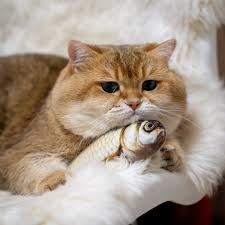
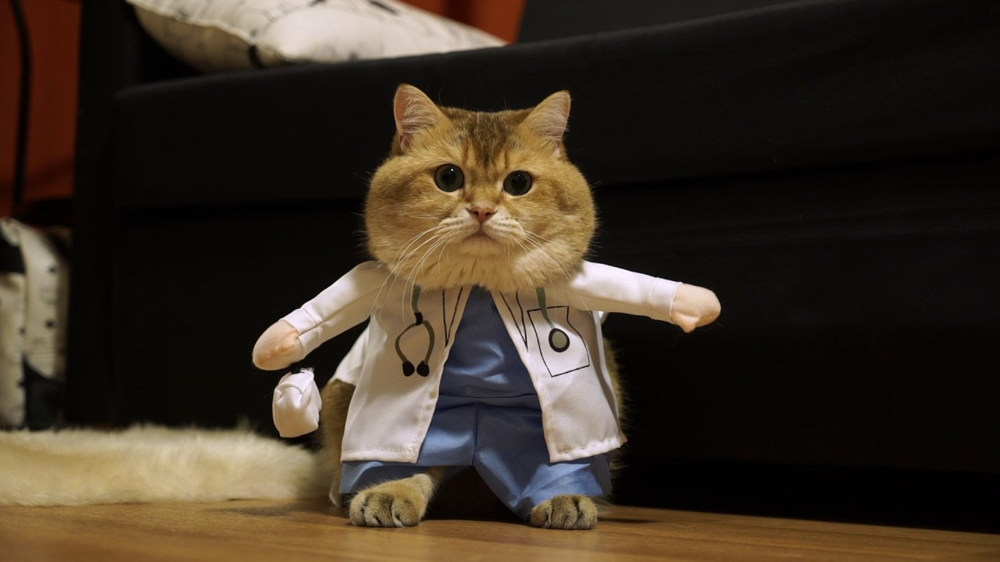

<DocTyPe html>
<html>
	<head>
		<title> BTS_3.2 </title>
		<meta charset="utf-8">
		<meta name="viewport" content="width=device-width, initial-scale=1">
		<link rel="stylesheet" href="https://maxcdn.bootstrapcdn.com/bootstrap/4.2.1/css/bootstrap.min.css">
		<script src="https://ajax.googleapis.com/ajax/libs/jquery/3.3.1/jquery.min.js"></script>
		<script src="https://cdnjs.cloudflare.com/ajax/libs/popper.js/1.14.6/umd/popper.min.js"></script>
		<script src="https://maxcdn.bootstrapcdn.com/bootstrap/4.2.1/js/bootstrap.min.js"></script>
	</head>
	
	<body>
			
	<div class="container">
	  <h2>Rounded Corners</h2>            
	   
	</div>

	<div class="container">
	  <h2>Circle</h2>      
	   
	</div>

	<div class="container">
	  <h2>Thumbnail</h2>      
	   
	</div>

	
	</body>
</html>